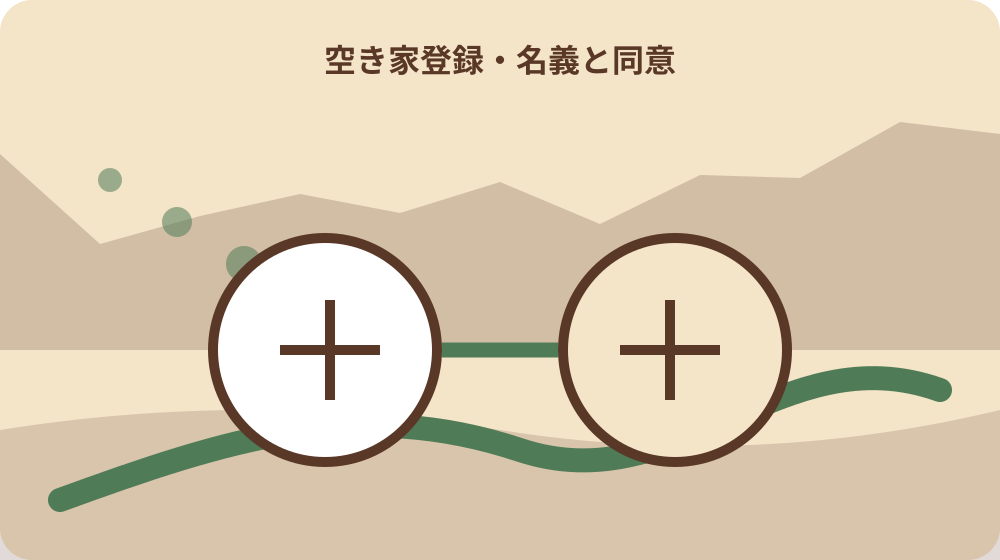
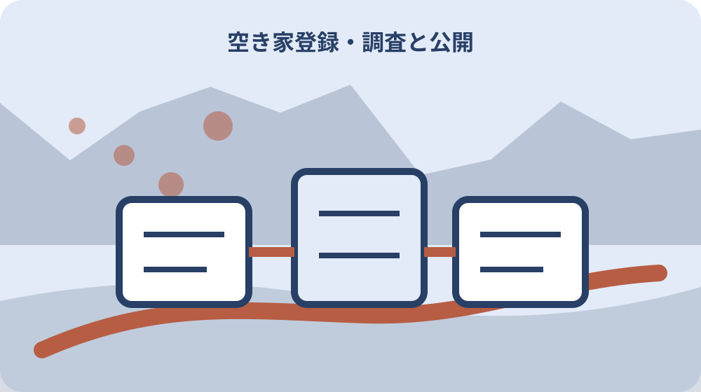

先に結論を確認する
この記事の答え：登録申込書、所有者、土地建物の名義差、同意書、現地調査、残置物処分を一件ファイルにまとめたいため、対象、基準日、公式資料、未確認事項を最初の一行へ置きます。
森町で最初に照合する条件：森町公式の二つの異なる案内を2026-08-13に確認する
物件所在地と所有者を固定する
『物件所在地と所有者を固定する』を調べる場面では、物件所在地と所有者を固定するでは、まず空き家バンクは町内物件を登録公開して移住定住と地域活性化を促す制度です。『物件所在地と所有者を固定する』を調べる場面では、この事実を出発点に、対象者・対象物・確認日を同じ行へ置きます。『物件所在地と所有者を固定する』を調べる場面では、森町空き家バンク登録の所有者・土地・同意書をそろえるの判断を口頭だけで進めず、根拠となるページ名と更新日も併記してください。
『物件所在地と所有者を固定する』を調べる場面では、公式案内の共通条件と、手元の個別事情を二列に分けます。『物件所在地と所有者を固定する』を調べる場面では、空き家バンクは町内物件を登録公開して移住定住と地域活性化を促す制度ですという根拠は左へ、物件所在地と所有者を固定するでまだ調べる対象は右へ置き、ページ本文から読み取れない事情を補いません。
『物件所在地と所有者を固定する』を調べる場面では、原資料の名称と確認日を記したら、数字・人名・物件番号を原文のまま転記します。『物件所在地と所有者を固定する』を調べる場面では、空き家と空き地の範囲を分けるへ移る前に、森町へ尋ねる質問を一つだけ決め、回答欄を空けて待ちます。
『物件所在地と所有者を固定する』を調べる場面では、この節は、対象が一意に決まり、根拠URLへ戻れ、次の担当が読める状態で終了です。『物件所在地と所有者を固定する』を調べる場面では、物件所在地と所有者を固定するに未確認があれば、結論欄ではなく再確認日の欄を埋めます。
『物件所在地と所有者を固定する』を調べる場面では、1番目の確認として『物件所在地と所有者を固定する』を保存するときは、根拠となる『空き家バンクは町内物件を登録公開して移住定住と地域活性化を促す制度です』と今回の対象を一本の線で結びます。『物件所在地と所有者を固定する』を調べる場面では、資料の写しには取得日、個別メモには記入者、問い合わせ結果には回答日を付け、次に読む人が公式事実と家族の判断を取り違えない状態にしてください。
空き家と空き地の範囲を分ける
『空き家と空き地の範囲を分ける』用の一件表に、手元の書類を開いたら、空き家と空き地の範囲を分けるに関係する名称、番号、日付を原文どおり写します。『空き家と空き地の範囲を分ける』用の一件表に、略称や家族の呼び名へ置き換える前に、登録希望者は登録申込書、同意書、チェックリストを定住推進課へ提出しますという公式案内と一致する欄を見つけることが重要です。
『空き家と空き地の範囲を分ける』用の一件表に、ここでは『登録希望者は登録申込書、同意書、チェックリストを定住推進課へ提出します』を確認線にします。『空き家と空き地の範囲を分ける』用の一件表に、家族の記憶と公式記載が違うときは両方を残し、空き家と空き地の範囲を分けるの判断材料として同じ意味に丸めないでください。
『空き家と空き地の範囲を分ける』用の一件表に、書類の版、発行元、対象期間を余白へ書くと、後日の更新と区別できます。『空き家と空き地の範囲を分ける』用の一件表に、続く登録申込書・同意書・チェックリストをそろえるで必要になる資料だけを抜き出し、原本の束は崩さず保管します。
『空き家と空き地の範囲を分ける』用の一件表に、作業者は確認した日時と方法を署名代わりに残します。『空き家と空き地の範囲を分ける』用の一件表に、空き家と空き地の範囲を分けるの答えが出ない場合も、調査経路が見えるなら一段階は完了です。
『空き家と空き地の範囲を分ける』用の一件表に、2番目の確認として『空き家と空き地の範囲を分ける』を保存するときは、根拠となる『登録希望者は登録申込書、同意書、チェックリストを定住推進課へ提出します』と今回の対象を一本の線で結びます。『空き家と空き地の範囲を分ける』用の一件表に、資料の写しには取得日、個別メモには記入者、問い合わせ結果には回答日を付け、次に読む人が公式事実と家族の判断を取り違えない状態にしてください。
登録申込書・同意書・チェックリストをそろえる
『登録申込書・同意書・チェックリストをそろえる』の対象について、この段階の要点は、土地と建物の所有者が異なる場合は土地所有者の同意書が必要です。『登録申込書・同意書・チェックリストをそろえる』の対象について、対象外かもしれない情報まで結論に混ぜず、確認できた範囲を枠で囲みます。『登録申込書・同意書・チェックリストをそろえる』の対象について、次の窓口へ渡す際は、何を見て判断したかが一目で戻れる形にします。
『登録申込書・同意書・チェックリストをそろえる』の対象について、登録申込書・同意書・チェックリストをそろえるの判断は制度名ではなく対象の一致で行います。『登録申込書・同意書・チェックリストをそろえる』の対象について、土地と建物の所有者が異なる場合は土地所有者の同意書が必要ですを参照しつつ、氏名・住所・年月・設備位置のうち記事に必要な識別子だけを確認票へ写します。
『登録申込書・同意書・チェックリストをそろえる』の対象について、窓口へ伝える文章は、現状、知りたいこと、持参できる資料の順に組み立てます。『登録申込書・同意書・チェックリストをそろえる』の対象について、土地建物の所有者差を確認するへ渡す値を一つに絞ると、質問が別制度へ広がりません。
『登録申込書・同意書・チェックリストをそろえる』の対象について、確認済みには根拠資料、対象外には理由、未確認には連絡先を付けます。『登録申込書・同意書・チェックリストをそろえる』の対象について、三つの欄が埋まれば、登録申込書・同意書・チェックリストをそろえるを家族へ引き継げます。
『登録申込書・同意書・チェックリストをそろえる』の対象について、3番目の確認として『登録申込書・同意書・チェックリストをそろえる』を保存するときは、根拠となる『土地と建物の所有者が異なる場合は土地所有者の同意書が必要です』と今回の対象を一本の線で結びます。『登録申込書・同意書・チェックリストをそろえる』の対象について、資料の写しには取得日、個別メモには記入者、問い合わせ結果には回答日を付け、次に読む人が公式事実と家族の判断を取り違えない状態にしてください。
土地建物の所有者差を確認する
『土地建物の所有者差を確認する』へ進む前に、土地建物の所有者差を確認するを実行するときは、公式案内にある『抵当権付き空き家や空き農地など物件状況により登録できない場合があります』を基準にします。『土地建物の所有者差を確認する』へ進む前に、手続名が似ていても目的や起算日が違うため、一件の記録へ詰め込まず、証明・申請・現地確認を別行で管理します。
『土地建物の所有者差を確認する』へ進む前に、『抵当権付き空き家や空き農地など物件状況により登録できない場合があります』は全員に同じ結果を保証する文ではありません。『土地建物の所有者差を確認する』へ進む前に、土地建物の所有者差を確認するでは、公式条件に自分の対象が当てはまるかを一項目ずつ照合します。
『土地建物の所有者差を確認する』へ進む前に、期限が見える資料には取得日も添えます。『土地建物の所有者差を確認する』へ進む前に、次の土地所有者の同意書を用意するで古い数字を再利用しないよう、確認時点を日付で囲んでください。
『土地建物の所有者差を確認する』へ進む前に、この場で決められない個別条件は窓口確認へ回します。『土地建物の所有者差を確認する』へ進む前に、土地建物の所有者差を確認するを推測で完了扱いにせず、回答者と回答日まで入った時点で確定にします。
『土地建物の所有者差を確認する』へ進む前に、4番目の確認として『土地建物の所有者差を確認する』を保存するときは、根拠となる『抵当権付き空き家や空き農地など物件状況により登録できない場合があります』と今回の対象を一本の線で結びます。『土地建物の所有者差を確認する』へ進む前に、資料の写しには取得日、個別メモには記入者、問い合わせ結果には回答日を付け、次に読む人が公式事実と家族の判断を取り違えない状態にしてください。

土地所有者の同意書を用意する
『土地所有者の同意書を用意する』の資料欄には、土地所有者の同意書を用意するでは、まず町は提出後に必要な現地調査と審査を行います。『土地所有者の同意書を用意する』の資料欄には、この事実を出発点に、対象者・対象物・確認日を同じ行へ置きます。『土地所有者の同意書を用意する』の資料欄には、森町空き家バンク登録の所有者・土地・同意書をそろえるの判断を口頭だけで進めず、根拠となるページ名と更新日も併記してください。
『土地所有者の同意書を用意する』の資料欄には、まず町は提出後に必要な現地調査と審査を行いますを確認票の見出し下へ引用せず要約します。『土地所有者の同意書を用意する』の資料欄には、その下に土地所有者の同意書を用意するの対象番号を置けば、一般案内と今回の一件を混同しにくくなります。
『土地所有者の同意書を用意する』の資料欄には、写真や画面保存には撮影方向・取得日・ページ名を付けます。『土地所有者の同意書を用意する』の資料欄には、抵当権や農地条件を事前相談するで照合するとき、同名の別資料を開いても違いを見つけられます。
『土地所有者の同意書を用意する』の資料欄には、完了印を付ける前に、別の家族が同じ対象へ到達できるか試します。『土地所有者の同意書を用意する』の資料欄には、迷った箇所は土地所有者の同意書を用意するの備考へ戻し、判断語を削ります。
『土地所有者の同意書を用意する』の資料欄には、5番目の確認として『土地所有者の同意書を用意する』を保存するときは、根拠となる『町は提出後に必要な現地調査と審査を行います』と今回の対象を一本の線で結びます。『土地所有者の同意書を用意する』の資料欄には、資料の写しには取得日、個別メモには記入者、問い合わせ結果には回答日を付け、次に読む人が公式事実と家族の判断を取り違えない状態にしてください。
抵当権や農地条件を事前相談する
『抵当権や農地条件を事前相談する』を照合するとき、手元の書類を開いたら、抵当権や農地条件を事前相談するに関係する名称、番号、日付を原文どおり写します。『抵当権や農地条件を事前相談する』を照合するとき、略称や家族の呼び名へ置き換える前に、町は物件情報の提供を行いますが交渉や契約は行いませんという公式案内と一致する欄を見つけることが重要です。
『抵当権や農地条件を事前相談する』を照合するとき、抵当権や農地条件を事前相談するで扱う公式事実は『町は物件情報の提供を行いますが交渉や契約は行いません』です。『抵当権や農地条件を事前相談する』を照合するとき、これに該当しない家族事情や現場状態は、別紙の個別確認欄へ移して根拠の種類を分けます。
『抵当権や農地条件を事前相談する』を照合するとき、原本、写し、ウェブ画面は証拠力も更新方法も違います。『抵当権や農地条件を事前相談する』を照合するとき、町の現地調査日を記録するへ進む際は、どの媒体を見たかまで記録してください。
『抵当権や農地条件を事前相談する』を照合するとき、対象、時点、資料、次の連絡先が四点とも読めればこの節を閉じます。『抵当権や農地条件を事前相談する』を照合するとき、抵当権や農地条件を事前相談するの結論だけを書いたメモは引継ぎ資料にしません。
町の現地調査日を記録する
『町の現地調査日を記録する』の質問票で、この段階の要点は、空き家バンクへの物件登録自体は無料です。『町の現地調査日を記録する』の質問票で、対象外かもしれない情報まで結論に混ぜず、確認できた範囲を枠で囲みます。『町の現地調査日を記録する』の質問票で、次の窓口へ渡す際は、何を見て判断したかが一目で戻れる形にします。
『町の現地調査日を記録する』の質問票で、資料上の条件を先に固定します。『町の現地調査日を記録する』の質問票で、今回は空き家バンクへの物件登録自体は無料ですが基準なので、町の現地調査日を記録するに関係する手元資料へ同じ用語があるかを探します。
『町の現地調査日を記録する』の質問票で、用語が一致しないときは勝手に言い換えず、双方の名称を並記します。『町の現地調査日を記録する』の質問票で、公開情報と現況の差を残すの窓口質問には、その差を短く添えます。
公開情報と現況の差を残す
『公開情報と現況の差を残す』の期限管理では、公開情報と現況の差を残すを実行するときは、公式案内にある『掲載情報は申請時点の状況であり実際と異なる場合があります』を基準にします。『公開情報と現況の差を残す』の期限管理では、手続名が似ていても目的や起算日が違うため、一件の記録へ詰め込まず、証明・申請・現地確認を別行で管理します。
『公開情報と現況の差を残す』の期限管理では、掲載情報は申請時点の状況であり実際と異なる場合がありますという案内から、今回確認すべき欄だけを抽出します。『公開情報と現況の差を残す』の期限管理では、公開情報と現況の差を残すと無関係な制度説明まで転記すると重要な差が埋もれるため、採用理由も一言添えます。
『公開情報と現況の差を残す』の期限管理では、数字は単位と起算点を離しません。『公開情報と現況の差を残す』の期限管理では、町は交渉契約を行わないと共有するへ数値を渡すときは、誰の、何の、いつの数字かを一行で説明します。
町は交渉契約を行わないと共有する
『町は交渉契約を行わないと共有する』を家族で見るなら、町は交渉契約を行わないと共有するでは、まず補助対象には残置物処分と改修工事があります。『町は交渉契約を行わないと共有する』を家族で見るなら、この事実を出発点に、対象者・対象物・確認日を同じ行へ置きます。『町は交渉契約を行わないと共有する』を家族で見るなら、森町空き家バンク登録の所有者・土地・同意書をそろえるの判断を口頭だけで進めず、根拠となるページ名と更新日も併記してください。
『町は交渉契約を行わないと共有する』を家族で見るなら、この節の根拠は補助対象には残置物処分と改修工事がありますです。『町は交渉契約を行わないと共有する』を家族で見るなら、町は交渉契約を行わないと共有するでは、公式の対象範囲と実物の状態を別の色で記し、資料だけで現地確認を済ませません。
『町は交渉契約を行わないと共有する』を家族で見るなら、問い合わせで得た回答は、質問文と組にして保存します。『町は交渉契約を行わないと共有する』を家族で見るなら、残置物処分と改修を分けるに関する別回答と混ざらないよう、担当部署も同じ行へ置きます。

残置物処分と改修を分ける
『残置物処分と改修を分ける』の更新確認時に、手元の書類を開いたら、残置物処分と改修を分けるに関係する名称、番号、日付を原文どおり写します。『残置物処分と改修を分ける』の更新確認時に、略称や家族の呼び名へ置き換える前に、補助対象物件は空き家バンクへ二年以上継続登録する要件がありますという公式案内と一致する欄を見つけることが重要です。
『残置物処分と改修を分ける』の更新確認時に、残置物処分と改修を分けるの入口では、補助対象物件は空き家バンクへ二年以上継続登録する要件がありますを現在の公式条件として採用します。『残置物処分と改修を分ける』の更新確認時に、過去の案内を持つ場合は上書きせず、旧版として横へ残してください。
『残置物処分と改修を分ける』の更新確認時に、更新差を見つけたら、実行予定日より前に窓口へ確認します。『残置物処分と改修を分ける』の更新確認時に、大石の視点：登録と売買成立を混同しないの作業日は、回答後に決める方が手戻りを減らせます。
大石の視点：登録と売買成立を混同しない
『大石の視点：登録と売買成立を混同しない』という実務提案では、この段階の要点は、残置物処分の補助上限は十万円、改修工事の上限は三十万円です。『大石の視点：登録と売買成立を混同しない』という実務提案では、対象外かもしれない情報まで結論に混ぜず、確認できた範囲を枠で囲みます。『大石の視点：登録と売買成立を混同しない』という実務提案では、次の窓口へ渡す際は、何を見て判断したかが一目で戻れる形にします。
『大石の視点：登録と売買成立を混同しない』という実務提案では、公的事実と私の提案を混ぜません。『大石の視点：登録と売買成立を混同しない』という実務提案では、残置物処分の補助上限は十万円、改修工事の上限は三十万円ですは資料で確認できる内容であり、大石の視点：登録と売買成立を混同しないを一行管理する方法は私、大石浩之の実務提案です。
『大石の視点：登録と売買成立を混同しない』という実務提案では、提案は森町や所管機関の公式見解ではありません。『大石の視点：登録と売買成立を混同しない』という実務提案では、登録後二年の管理担当を決めるへ進む順序も個別事情で変わるため、担当窓口の回答を優先します。
登録後二年の管理担当を決める
『登録後二年の管理担当を決める』の最終点検として、登録後二年の管理担当を決めるを実行するときは、公式案内にある『空家等対策特別措置法は空家の適切な管理と活用を進める国の基本法です』を基準にします。『登録後二年の管理担当を決める』の最終点検として、手続名が似ていても目的や起算日が違うため、一件の記録へ詰め込まず、証明・申請・現地確認を別行で管理します。
『登録後二年の管理担当を決める』の最終点検として、最後に空家等対策特別措置法は空家の適切な管理と活用を進める国の基本法ですをもう一度原資料で照合します。『登録後二年の管理担当を決める』の最終点検として、登録後二年の管理担当を決めるの記録が制度の説明だけになっていないか、今回の対象を示す番号や日付があるかを確認してください。
『登録後二年の管理担当を決める』の最終点検として、物件所在地と所有者を固定するへ引き継ぐ資料は、最新版、旧版、個別証拠の三束に分けます。『登録後二年の管理担当を決める』の最終点検として、紛失防止のため保管場所とファイル名も一覧へ入れます。